Résumé du parcours des prêtres et curés originaires de Rouhling
Dans la chapelle Il existait un tableau qui a disparu, avec le nom des curés
Dernier curé inscrit : Joseph JUNG (1911-1976)
MASSING Jean Paul
Né le 11/03/1709 à Rouhling – Décédé en 1746 à Boulay
Fils de Jean MASSING et d’Anne Marguerite OSTER.
Il reçutle prénom de son parrain « Jean Paul GILLE » (qui s’est écrit SCHILL par la suite). Fils de Nicolas GILLE, 1erhabitant connu, de la Maison des Arts et des Traditions.
Ordonné en 1739 à Metz par Monseigneur Claude de Rouvroy de Saint-Simon. Vicaire (22.2) à Buding (région Thionville/Sierck) et à Vahl-Ebersing près de Saint-Avold du 17/02/1739 au 18/07/1742, ensuite vicaire à Boulay.
SCHMITT Jean
Né le 08/10/1801 à Rouhling – Décédé le 12/10/1866 à Grosbliederstroff
Fils de Jean SCHMITT et d’Anne KESSLER.
Ordonné en 1825 par Monseigneur Jacques François BESSON. Desservant (22.3), il a d’abord assuré l’intérim après le décès du desservant de Sturzelbronn à partir du 17/12/1825 et ensuite fut nommé desservant d’Éguelshardt le 15/02/1826. Nommé vicaire le 30/05/1828 à Etting et desservant de cette même paroisse le 30/10/1848. Il y resta pendant 37 ans. Il se retira à Grosbliederstroff où il décéda au bout de 15 jours de retraite, le 12/10/1866. Malgré sa longue présence à Etting, il souhaita être enterré à Rouhling où ses funérailles furent célébrées le 15/10/1866 par l’abbé MULLER, archiprêtre de Sarreguemines et en présence de 8 autres prêtres.
WEISSLINGER Jean Pierre
Né le 08/07/1843 à Rouhling - Décédé le 21/09/1908 à Rouhling - Inhumé à Rouhling.
Fils d’AndréWEISSLINGER et d’Anne Marie SIEBERT.
Ordonné le 12/07/1868 à Metz par Monseigneur Paul Georges Marie DUPONT des LOGES. Vicaire à Boulay le 08/09/1868 avec l’archiprêtre Jean MARTINÉ, ancien desservant de Rouhling en 1835. Ensuite le 10/02/1869 il est nommé à Kœnigsmacker où il assura un professorat à l’institut de Sierck dès le 01/10/1869. Curé à Falk le 23/09/1872 pendant 8 ans, puis prit en charge la paroisse de Grostenquin le 15/05/1880. Et entreprit la construction d’une église de style gothique à Falk en 1885. Archiprêtre à Metzervisse à partir du 03/03/1888. Archidiacre de Thionville le 25/04/1895. De là, il fut appelé à l’évêché de Metz par Monseigneur François Louis FLECK dont il devint le Vicaire Capitulaire. Vicaire Général (22.4) le 02/10/1901, les Rouhlingeois l’appelaient le « Grand Vicaire ». Il démissionna, sans doute pour raison de santé le 12/02/1906. Il fut inhumé à Rouhling.
FERSING Pierre - missionnaire
Né le 12/06/1843 à Rouhling – Décédé le 29/07/1918 à Riobamba (Équateur)
Fils de Jean Pierre FERSING et d’Anne Marie FERSING.
Il est entré dans la congrégation des Rédemptoristes en 1862, puis a prononcé ses vœux le 15/10/1863 et a été ordonné le 02/04/1870 à Trèves, donc avant le déclenchement de la guerre franco-prussienne.
Il fut ensuite envoyé en mission en 1884 en Amérique du Sud à Riobamba, chef-lieu de la province de Chimborazo en République d’Équateur. Malgré l’anarchie qui régnait, depuis l’assassinat du président MORENA en 1875 et qui dura une vingtaine d’années, il n’y avait pas d’hostilité particulière envers les missions du pays. Il décéda à Riobamba à l’âge de 75 ans et y fut enterré.
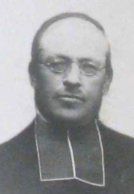
22.2 Vicaire est un titre religieux . Ce mot est un emprunt au vicarius signifiant « suppléant, remplaçant ».
22.3 Desservant : Ecclésiastique qui dessert une cure, une chapelle, une paroisse (curé).
22.4 Un vicaire général (appelé aussi VG, autrefois grand-vicaire*) est un clerc qui, muni du pouvoir exécutif ordinaire général, seconde un *
KLAM Pierre - missionnaire
Né le 18/01/1841 à Rouhling – Décédé le 10/09/1914 à Santa Fe (Colombie)
Fils de Jean KLAM et d’Elisabeth MASSING.
Il est entré dans la congrégation des Rédemptoristes de Téterchen le 15/10/1863 et a été ordonné à Trêves le 02/04/1870. Il opta pour Saint-Nicolas-de-Port (54) le 21/08/1872. Religieux au couvent de Téterchen, a été expulsé à la fermeture du couvent. Il effectua quelques missions en France, puis fut envoyé en Amérique du Sud à Riobamba. En cours de route, il contracta un mal de gorge assez grave qui l’obligea à renoncer à gérer la mission. Il devint aumônier des sœurs Marianistes, fonda la Maison de Santiago (Saint Jacques) et fit un projet de règle pour cette nouvelle congrégation. Il resta en Colombie pendant 30 ans, y décéda et y fut inhumé.
JUNG Nicolas
Né le 13/12/1845 à Rouhling – Décédé le 01/09/1918 à Leyviller
Fils de Jean Pierre JUNG et d’Anne FERSING.
Ordonné prêtre le 13/08/1871 à Metz par Monseigneur FLECK François Louis. Il fut vicaire à Bitche le 02/08/1871, à Puttelange le 22/09/1873, puis desservant à Inglange (1875), Menskirch (1884), Flastroff (1889) et à Leyviller (1903), où il décéda. Il fut inhumé à Rouhling le 05/09/1918 dans l’ancien cimetière, à côté de son ami, Monseigneur Jean Pierre WEISSLINGER.
JUNG Joseph André – Chanoine
Né le 18/03/1860 à Rouhling - Décédé le 16/12/1938 à Metz – Inhumé à Rouhling
Fils de Lambert JUNG et de Christine SIEBERT.
Prêtre le 15/07/1883, vicaire de Saint-Vincent le 17/09/1883 - Desservant de Loutzviller le 05/07/1892 et de Walschbronn le 25/09/1894 - Directeur du journal LothringerVolkszeitung 1908-1922 - Directeur du MetzerKatholischesVolksblatt le 10/10/1908 à 1938 - Aumônier aux Récollets le 01/03/1909 et à Sainte-Constance le 01/10/1929.
WILLAR Pierre - missionnaire
Né le 20/04/1858 à Rouhling (57) - Décédé le 03/10/1887 à Nhan-Lo (Vietnam – ancien Tonkin) Fils de Jean WILLAR et de Catherine SCHMITT.
Il entra sous-diacre au Séminaire des Missions Étrangères le 12/09/1882, reçut le sacerdoce le 08/03/1884, et, le 8 avril suivant, partit pour le Tonkin occidental. Il fut d'abord placé à Bai-Vang, puis envoyé dans un district de la province de Than-Hoa, où en 1885 et 1886, plusieurs paroisses souffrirent beaucoup de la persécution. Un assassinat mit fin à ses jours en rentrant de Lang-Than où il était allé administrer un malade. Sur son chemin il s’engagea dans un défilé, où il reçut un coup de feu. Il mourut presque immédiatement. Il fut enterré à Nhan-Lo.
MASSING Pierre - Définiteur
Né le 20/12/1860 à Rouhling – Décédé le 27/02/1940 à Saint-Palais-du-Né (Charente)
Fils de Pierre MASSING et de Catherine STEINMETZ.
Ordonné prêtre le 20/12/1884 à Metz par Monseigneur DUPONT des Loges et fut nommé vicaire à Sarreguemines le jour même de son ordination. Nommé ensuite comme desservant à Merten (1893), à Petit-Réderching (1908), sa dernière paroisse et à partir du 12/08/1932, il assura la fonction de définiteur (22.5)du Canton de Rohrbach-Lès-Bitche. Il accompagna ses paroissiens le 01/09/1939 en Charente, à Lachaise. Il décéda à l’âge de 80 ans, dans le village voisin, Saint-Palais-du-Né, où il fut inhumé le 1er mars.
22.5 Définiteur : Dans l'Ordre ** et dans l', les ** réunissent les représentants de toutes les Provinces de l'. On distingue les chapitres de , qui réunissent ceux qui gouvernent les Provinces, et les chapitres deDéfiniteurs, élus par les religieux de chaque Province pour les représenter. Les chapitres d'élection, réunis pour choisir le maître de l'Ordre, réunissent les Provinciaux et les Définiteurs.

FERSING Nicolas - Chanoine
Né le 21/10/1860 à Rouhling – Décédé le 14/06/1952 à Sarralbe
Fils de Nicolas FERSING et d’Anne SCHMITT
Il fut ordonné prêtre à Metz le 19 juillet 1885 par Monseigneur DUPONT DES LOGES et nommé vicaire à Forbach le 01/09/1885 où il resta 7 ans. Le 06/08/1892 il s’installa à Hilsprich. Sa sœur Catherine, de 6 ans sa cadette, fut sa fidèle gouvernante. En 1939, il accompagna un groupe de 190 de ses paroissiens à Barbezieux, en Charente. Il resta à Hilsprich jusqu’au 30/09/1946 et fit valoir ses droits à la retraite à l’âge de 86 ans. Le 14/08/1945, une semaine après son jubilé de « Diamant », il fut nommé Chanoine honoraire, à Metz par Monseigneur HEINTZ. Le 01/10/1946, il se retira à la Maison de Retraite de Sarralbe où il décéda dans sa 92ème année. Il fut enterré à Hilsprich le 18 juin dans le caveau des prêtres.
HEIN Nicolas
Né le 09/08/1862 à Rouhling – Décédé le 01/05/1916 à Strasbourg (clinique Sainte-Odile)
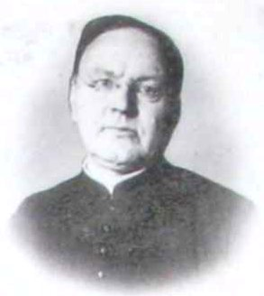
Fils d’André HEIN et d’Elisabeth HERGOTT.
Ordonné prêtre à Metz en 1886 par Monseigneur FLECK. Il fut nommé vicaire à Ottonville-Ricrange pendant 2 ans. Puis fut desservant de Henriville de 1888 à 1892 et de Farébersviller de 1892 à 1913. Il démissionna en 1913 pour raison de santé et se retira à Rouhling où sa sœur Marie de 17 ans son ainée et qui fut sa gouvernante auparavant, le soigna. Elle décéda le 1er septembre 1913 et il fut hospitalisé à Sarreguemines, puis après la déclaration de guerre en 1914 à la clinique Sainte-Odile où il décéda à l’âge de 54 ans, après 3 années de grandes souffrances. Il fut enterré à Rouhling le 3 mai 1916 en présence de 18 prêtres.
MASSING Georges Joseph
Né le 15/11/1871 à Rouhling – Décédé le 19/10/1916 à Soucht
Fils de Pierre MASSING et de Catherine STEINMETZ.
Il fut ordonné le 16/07/1899 à Metz par Monseigneur FLECK et nommé vicaire le 21 septembre à Sainte-Ségolène de Metz. Il fut ensuite desservant de Feves en 1901, de Lindre-Basse en 1904 et de Soucht en 1909 où il décéda et y fut enterré le 23 octobre.
WEISSLINGER Jean Louis
Né le 31/01/1873 à Rouhling – Décédé et inhumé en 1940 près de Cognac (Charente)
Fils de André WEISSLINGER et de Marie SCHMITT.
Il fut ordonné prêtre en 1900. Il s’engagea dans l’ordre des Oblats de Marie Immaculée (OMI) dont le Couvent se trouvait à Notre-Dame de Sion-Vaudémont (Meurthe et Moselle). Il resta au Couvent pendant une trentaine d’années, avant de se voir attribuer d’autres tâches à la maison de l’ordre à Bordeaux.
JUNG Joseph - Définiteur
Né le 03/06/1877 à Rouhling – Décédé le 01/07/1957 à Montigny-lès-Metz.
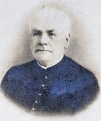
Fils de Jean Pierre JUNG et de Marguerite JUNG.
Ordonné à Metz le 13/07/1902 par Monseigneur BENZLER, puis nommé vicaire de Notre-Dame Metz le 19/09/1902.Il devint le desservant d'Inglange le 19/08/1907 et de Beauregard le 20/07/1912. À partir du 12/09/1930, il assura aussi la fonction de définiteur de l’Archiprêtré de Thionville.Desservant de Farébersviller le 26/07/1935 et définiteur de l'archiprêtré de Saint-Avold le 12/12/1945. Il prit sa retraite le 01/10/1955 et s’installa à Montigny-lès-Metz, où il décéda. Il fut inhumé à Rouhling le 04/07/1957.
JUNG Joseph
Né le 08/02/1877 à Rouhling – Décédé le 25/03/1946 à Lixheim
Fils de Nicolas JUNG et d’Elisabeth SIEBERT.
Il a été ordonné prêtre à Metz en 1904 par Monseigneur BENZLER et nommé vicaire à Forbach où il resta 4 ans. Puis desservant de Lixheim et de Vieux Lixheim, il y resta jusqu’à sa mort et y fut enterré. Pendant ces 38 ans il réussit à entretenir de bonnes relations avec le pasteur et le rabbin, car ils y avaient également des communautés de protestants et de juifs dans ces mêmes villages. Sa sœur, Marie Madeleine née en 1872 était sa gouvernante. Elle décéda 3 mois après lui.
MASSING Nicolas
Né le 22/10/1880 à Rouhling – Décédé le 21 mars 1940 et inhumé à La Rochefoucauld (Charente)
Fils de Jean Nicolas MASSING et de Madeleine JUNG.
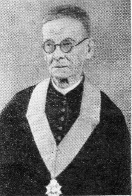
Il a été ordonné prêtre à Metz le 15/07/1906 par Monseigneur BENZLER en même temps que l’abbé Victor FRIEDERICH, futur curé de Rouhling. Puis fut nommé Vicaire à Sarrebourg le 21/10/1906. Nommé Desservant de Reyersviller le 01/06/1909, puis d’Erching-Guiderkirch le 23/06/1915, il y resta jusqu’à l’évacuation en 1939 à Ivrac et Maleyrand (Charente). Il ne devait plus revoir son pays natal.
EBERHART Nicolas
Né le 29 décembre 1890 à Rouhling – Décédé le 10 février 1968 et inhumé à Petit-Réderching
Fils de Michel EBERHART et de Marie MASSING.
Mais avant d’être ordonné prêtre à Metz le 17/07/1921 par Monseigneur PELT, il dû arrêter ses études pour revêtir l’uniforme « Feldgrau » pendant les 4 années de guerre.Puis a été nommé vicaire à Stiring-Wendel le 26/07/1921, vicaire à Audun-le-Tiche le 11/01/1924, desservant de Berviller-en-Moselle le 16/09/1925, desservant de Morsbach le 18/05/1934, il y vécut l’évacuation en 1939 avec ses paroissiens. Puis desservant de Petit-Réderching le 05/10/1948. Il prit sa retraite en 1967 et décéda l’année suivante. Ses deux sœurs, Madeleine et Marie, étaient ses gouvernantes.
Avec de nombreux confrère, il a assisté Monseigneur LOUIS pour la bénédiction de l’église de Rouhling en 1958, après sa reconstruction.
JUNG Auguste
Né le 28/07/1901 à Rouhling – Décédé le 22/11/1929 à Metz – Inhumé à Rouhling
Fils d’André JUNG et d’Anne Marie FRIEDERICH.
Ordonné prêtre le 28/07/1926 à Metz par Monseigneur PELT et nommé vicaire à Montigny-Lès-Metz. Il s’attacha immédiatement à développer des associations eucharistiques, mais surtout deux chorales d’hommes et une de garçons. Il souffrit d’un mal incurable et décéda après une grave opération à l’hôpital Bon Secours à Metz.
TONI Joseph
Né le 31/05/1908 à Rouhling – Décédé le 07/01/2003 à Saint Avold
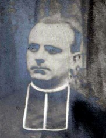
Fils de Michel TONI et d’Anne Marie PHILIPPE.
Ordonné prêtre à Metz le 14/07/1935 par Monseigneur PELT avec 35 de ses confrères dont l’abbé COLLIN, futur desservant de Rouhling en 1950. Il fut nommé vicaire à Rosselange où il resta jusqu’en 1939. Ensuite, il prit en charge la paroisse de Vaxy et son annexe de Puttigny. En juin 1940, sa paroisse est concernée par l’exil. Il décide de s’exiler avec la population dans le Tarn et Garonne, où il restera jusqu’en 1945. Pendant ces 5 années il fut remplacé à Vaxy par un Rouhlingeois, l’abbé Alphonse MASSING. Il y restera jusqu’en 1951 et fut nommé desservant d’Ottonville et Ricrange. En 1958 il fut chargé de la paroisse de Denting et resta en fonction jusqu’en 1993 à l’âge de 85 ans. Il se retira à la maison de retraite « Home de Saint Avold », où il décéda à près de 95 ans.
GLADEL Gustave - missionnaire
Né le 31/01/1908 à Rouhling – Décédé le 18/12/1978 à Novéant-sur-Moselle
Inhumé à Rouhling. Fils de Philippe GLADEL et de Marie PHILIPPE.
Ordonné prêtre en 1936 à Tunis. Missionnaire en Afrique. Surnommé le Père Blanc.
Il a démissionné de son sacerdoce, ensuite s’est marié en 1949 et a divorcé en 1963.
JUNG Joseph
Né le 18/10/1912 à Rouhling – Décédé le 23/06/1974 à Sarreguemines.
Inhumé à Rouhling le 26/06/1974. Fil d’André JUNG et d’Anne Marie FRIEDERICH.
Ordonné prêtre le 18/07/1937 à Metz.
Nommé vicaire à Basse-Yutz le 19/07/1937 jusqu’en sa mobilisation sous les drapeaux en 1939. À son retour le 17/04/1944 il fut à nouveau nommé, vicaire à Basse-Yutz et administrateur de Basse-Ham. Le 02/08/1947, il prit en charge la paroisse de Falk où il resta pendant 23 ans. Mais pour des raisons de santé il demanda sa mutation dans une paroisse moins importante et c’est ainsi qu’il arriva à Zetting le 16/09/1970 et y resta jusqu’à son décès.
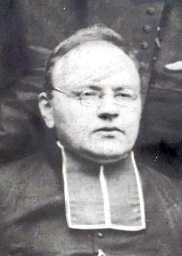
MASSING Alphonse
Né le 24/10/1912 à Rouhling – Décédé le 19/02/1960 à Rahling
Inhumé à Rahling. Fil de Louis MASSING et de Marie KLAM.
Ordonné prêtre le 18/07/1937 à Metz, puis nommé vicaire de Sarreguemines jusqu’à la guerre en 1939, puis revint à son poste au retour de l’évacuation. Desservant de Vaxy-Puttigny en 1942 en remplacement de l’abbé TONI exilé dans le Tarn et Garonne. Il trouva une paroisse abandonnée par les autochtones, remplacés par des « Siedler » (colons), originaires de l’Est de l’Allemagne. Par contre il trouva installée au presbytère la famille de l’abbé TONI. Au retour des exilés et de l’abbé TONI en 1945, il fut muté comme desservant à Rolbing et y resta jusqu’au 07/03/1949. Puis fut nommé à Rahling en 1949, jusqu’à son décès d’une crise cardiaque en 1960.
JUNG Joseph - Assomptionniste
Né le 15/06/1911 à Rouhling – Décédé le 11/09/1976 à Lorgues
Fils de Jean Pierre JUNG et de Marie TONI.
Ordonné prêtre 03/12/1939 au Monastère de Saint-Joseph de Sceaux (Hautes de Seine)
Études secondaires, appelées alors « études de grammaire et d’humanités » à Scy-Chazelles de 1924 à 1928, à Miribel (Isère) de 1928 à 1930, études de philosophie de 1932 à 1935. Puis continua ses études au noviciat des assomptionnistes à Nozeroy (Jura) jusqu’en octobre 1932, où il prononça sa 1ère profession de foi et prit le nom de « Père Etienne Marie ». Service militaire à Nancy de 1935 à 1936. Études de théologie à Montléry-Lormoy (Essonne) de 1936 à 1939 où il prononça ses Profès-Perpétuel le 09/12/1937. Puis survint la guerre et fut mobilisé. En 1940 il rejoint sa famille à Boutiers-Saint-Trojan où il célébra sa 1ère messe sur la place de l’église. Nommé « Économe » au Scolasticat Saint-Jean de Scy-Chazelles de 1945 à 1948 et de 1946 à 1952, il enseigna la langue allemande à l’Alumnat de Saint-Sigismond à Albertville (Savoie). Puis fut nommé vicaire à Lorgues en 1952, où pendant 24 ans il termina sa longue mission.
Noms des prêtres n’ayant pas figurés sur le tableau
JUNG Paul
Né le 21/07/1923 à Rouhling – Décédé le 28/08/2002 à Saint-Avold
Ses funérailles furent célébrées le 31/08/2002 à Rouhling, où il fut inhumé.
Fil de André JUNG et Anne Marie FRIEDERICH.
Ordonné prêtre le 03/07/1955 à Metz. En 1956, vicaire à Petite-Rosselle. En 1956, vicaire à la Cité du Habsterdick. En 1961, vicaire à Bouzonville. En 1962, vicaire à la Cité Ségolène à Moyeuvre-Grande. En 1967, desservant de la cité Bois Richard. En 1971, desservant de Bermering-Rodalbe et Insming. En 1978, desservant d’Epping-Urbach et Ormersviller. Le 01/10/1992, il fut à la retraite et se retira au Home des prêtres de Saint-Avold où il décédé le 28/08/2002. Il fut un remarquable musicien et sculpteur sur bois. Une de ses œuvres a été offerte par ses héritiers (Un calice de baptême) à la Maison des Arts et des Traditions de Rouhling.
EBERHART Nicolas - Chanoine
Né le 03/07/1930 à Rouhling – Décédé le 24/09/1996 à Sarreguemines. - Inhumé le 28/09/1996 à Schorbach.
Fils de Michel EBERHART et de Marguerite Madeleine SCHWARTZ.
Il fit ses études secondaires au Petit Séminaires de Montigny-lès-Metz de 1945 à 1949, il étudia la théologie au Grand Séminaire de Metz de 1949 à 1956. C'est le 22/04/1956 qu'il fut nommé prêtre à Metz. Vicaire à Metz-Devant-lès-Ponts le 01/09/1956. Le 01/09/1962, il reçut la charge d’aumônier de la jeunesse du canton de Bitche, Volmunster et Rohrbach-lès-Bitche. Le 01/10/1991 il devint desservant de Schorbach et administrateur de Hottviller, il fut nommé définiteur de l'archiprêtré de Bitche, le 26/09/1991 et de celui de Volmunster le 14/10/1991. L'année suivante il fut nommé chanoine honoraire de la Cathédrale de Metz.
SCHWARTZ Joseph
Né le 19/03/1933 à Rouhling – Décédé le 12/02/2013 à Metz – Inhumé à Rouhling
Fils de Joseph SCHWARTZ et de Anne EBERHART.
Ordonné prêtre le 15/03/1959 à Metz. Après son service militaire de 28 mois en Algérie, il fut nommé vicaire à Metz-devant-les-ponts. En 1964 il fut muté à Audun-le-Tiche, où il resta 4 ans. Il revint à Metz pour un court séjour comme vicaire résident à Saint-Vincent de Paul. En 1969 il fut intégré à l’équipe de quatre prêtres de l’agglomération de Woippy et chargé du quartier de Saint-Éloi. Il devait y rester jusqu’à la retraite en 2001. Il participa à l’aventure des prêtres ouvriers en tant que facteur, pendant 10 ans et ensuite comme ouvrier à la SNCF.
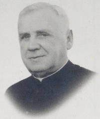
EBERHART Joseph André
Né le 21/04/1934 à Rouhling - Décédé le 21/11/2018 à Feluy (Belgique)
Fils de Joseph EBERHART et Cécile WARY.
En 1948 est entré à l'école apostolique (petit séminaire) des Pères Barnabites de Melun (Seine et Marne) pour ses études secondaires qu'il a achevées en 1954 à l'école apostolique des Pères Barnabites de Kain-lez Tournai (diocèse de Tournai en Belgique). De septembre 1954 à septembre 1955, noviciat des Pères Barnabites à Mouscron (diocèse de Tournai en Belgique). Le 19/09/1955 prononce sa première profession religieuse (temporaire et renouvelable annuellement pendant 5 ans) à Mouscron, au terme de l'année de noviciat. De septembre 1955 à 1961 il fait des études de philosophie et de théologie à Louvain (Belgique), puis prononce sa profession religieuse solennelle définitive en septembre 1960.
Il fut ordonné le 17/03/1962 en l'église de l'Enfant-Jésus à Bruxelles (Ordre des Barnabites) et effectua sa 1ère messe le 30/04/1962 à Rouhling. Son ministère sacerdotal débutera en la paroisse Notre-Dame du Rosaire à Saint-Ouen (diocèse de Saint-Denis en France), puis en la paroisse Saint-Martin à Gouy-lez-Piéton (diocèse de Tournai en Belgique). C’est là qu’il quitta la vie religieuse et le sacerdoce pour se marier le 26/07/1972 à Nivelles (Belgique).
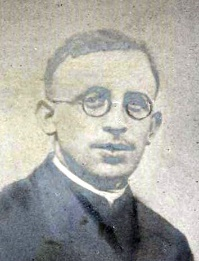
JUNG Clément
Né le 04/03/1943 à Rouhling. Fils d’André JUNG et de Joséphine MASSING.
Ordonné prêtre le 29/06/1967 à Metz. Il fut nommé vicaire à la paroisse Saint-Nicolas de Sarreguemines de 1967 à 1973. De 1973 à 1978 : vicaire Résident à la Cité La Chapelle. De 1978 à 1989 : aumônier de l’Action Catholique Ouvrière dans le secteur du Bassin Houiller Lorrain. De 1989 à 2002 : Curé de Moyeuvre-Petite de la Cité Froidcul et de Moyeuvre-Grande de la Cité Tréhémont. De 2002 à 2017 : Curé de Hombourg-Haut et de Guenviller. De 2007 à 2011, il fut assisté d’un vicaire, l’abbé ASSIH Yoma Vincent, prêtre d’origine togolaise, venu faire des études de théologie à l’université de Metz. Il a fêté son jubilé d’or le 25/06/2017 à Hombourg-Haut et prit sa retraite le 01/09/2017. Une nouvelle étape s’ouvre pour Clément JUNG qui a rejoint la résidence diocésaine Chrodegang à Saint-Avold.
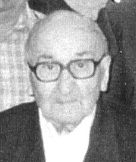
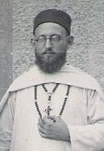
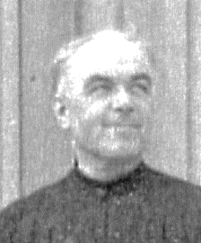
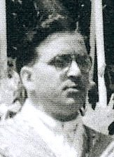
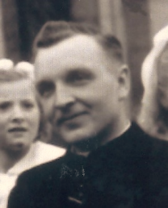
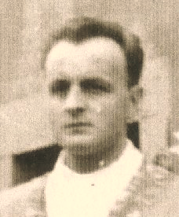
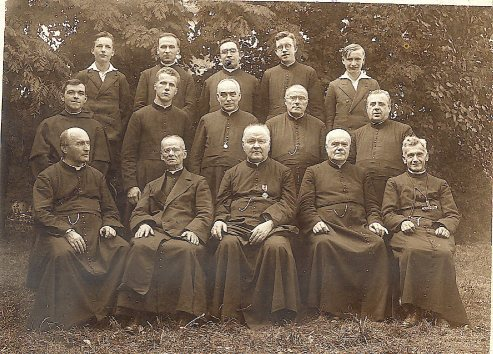